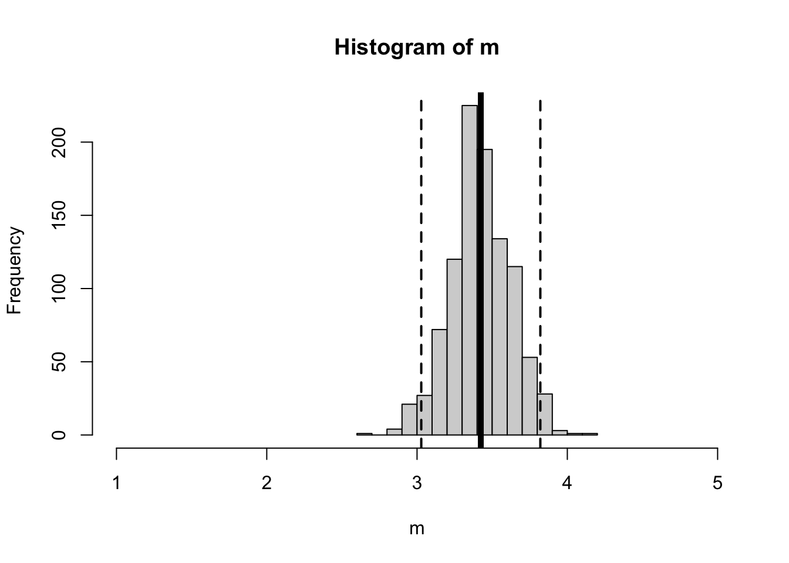

Load the grad onboarding dataset (name this d to follow along with professor code in lecture). The variable can.forloop asked students whether they could write a for-loop or not. What is the difference in the number of students who said that YES they could for-loop, compared to the number who said either NO or MAYBE? Find a way to get R to calculate this difference using code (hint : use indexing and the summary function.)
Now, write a for-loop to estimate how much sampling error might influence this number. Generate 1000 new samples, and re-calculate the difference between YES and NO + MAYBEs. What percentage of re-sampled groups would show that there are more people who CAN write a for-loop than NO or MAYBE?
Announcements & Agenda
Agenda
9:10 - 9:30 : Check-In.
9:30 - 10:30 : Linear Models (Basics)
10:30 - 11:00 : Break & Presentation
11:00 - 12:00 : Linear Models (Continued)
Announcements
Mini Exam in TWO Weeks.
I give you data and a question, you generate a report in Quarto.
Data loading and cleaning.
Scale creating & descriptive statistics.
Linear Models (TODAY!)
Bootstrapping
A fun challenge problem worth 1 point.
Take home (9AM-12PM).
Ask questions on ZOOM if / when you have them. Okay? Don’t struggle on your own. Plenty of time to do that in other spaces!
We will practice / review next week (Lab 5 a practice exam.)
Think it will be chill, and if not then professor takes the blame, alright?
Professor Check-In Code
d <-read.csv("../Datasets/Grad Onboard 2025/grad_onboard_SP25.csv", # my datastringsAsFactors = T, # converting strings to categorical factorsna.strings ="") # a way to handle missing data (blanks --> NA values)summary(d$can.forloop)[2] - (summary(d$can.forloop)[1] +summary(d$can.forloop)[3])
SST/length(residuals) # average of squared residuals (variance)
[1] 0.4527276
sqrt(SST/length(residuals)) # average of residuals, unsquared (standard deviation)
[1] 0.6728504
sd(d$PSYSCI) # slightly higher
[1] 0.6832828
sqrt(SST/(length(residuals)-1)) # the 'real' equation; n-1 to inflate our estimate / adjust for small samples.
[1] 0.6832828
The Mean is a Prediction of our Population (with Sampling Error)
m <-array()for(i inc(1:1000)){ nd <- d[sample(1:nrow(d), nrow(d), replace = T),] # a new sample m[i] <-mean(nd$PSYSCI, na.rm = T)}mean(d$PSYSCI, na.rm = T)
[1] 3.393939
mean(m) # similar!
[1] 3.391043
sum(m >2.5) # all of them (100% greater than the midpoint of the scale.)
[1] 1000
sd(m) # sampling error!
[1] 0.1154277
hist(m, xlim =c(1,5)) # our distribution of sampling estimates abline(v =c(mean(d$PSYSCI),mean(d$PSYSCI) +1.96*sd(m),mean(d$PSYSCI) -1.96*sd(m)),lwd =c(5,2,2), # two line widthslty =c(1,2,2)) # two line types

Linear Models : Improving our Predictions (Numeric IV)
The Mean as a Model
lm(PSYSCI ~1, data = d) # predicting PSYSCI from a constant (1), using the datset = d